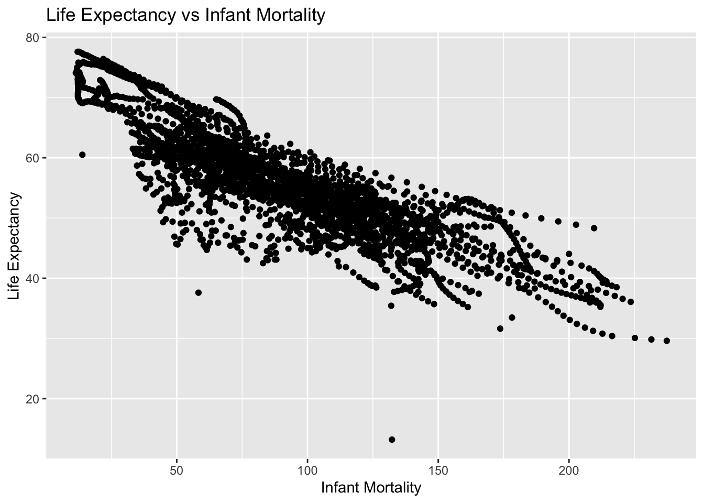
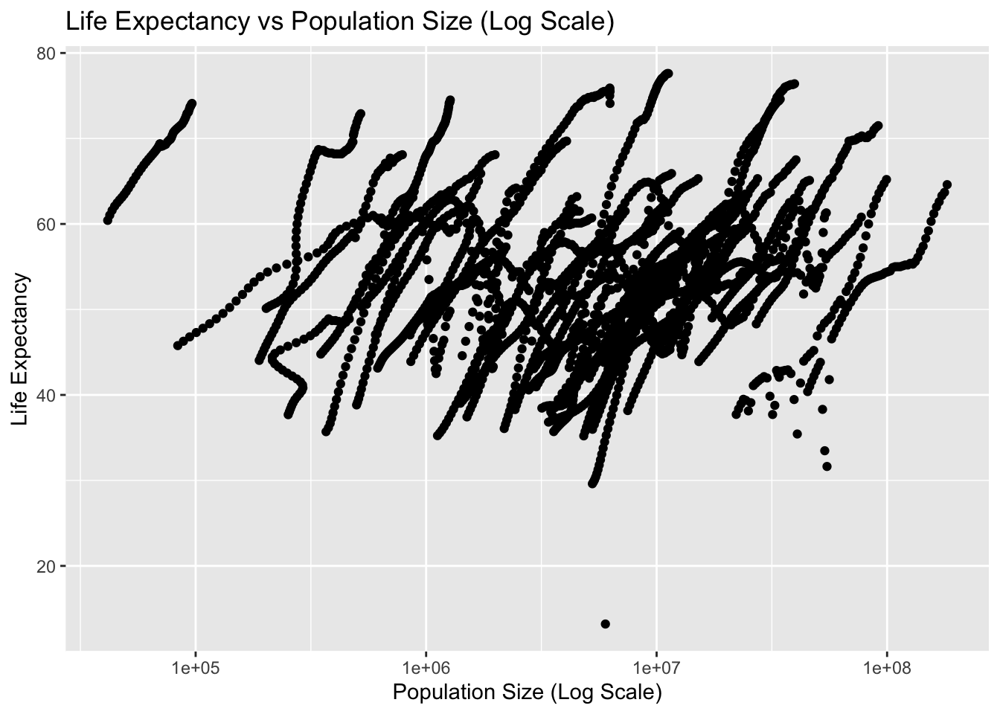
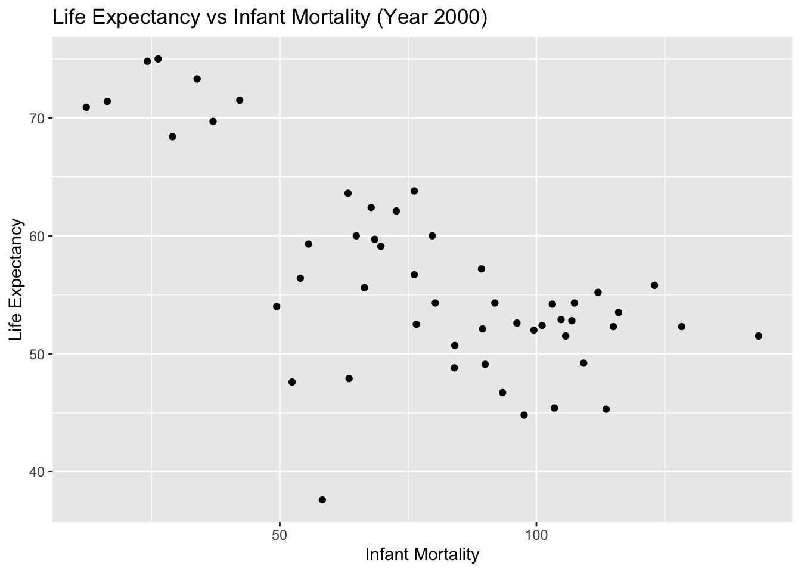
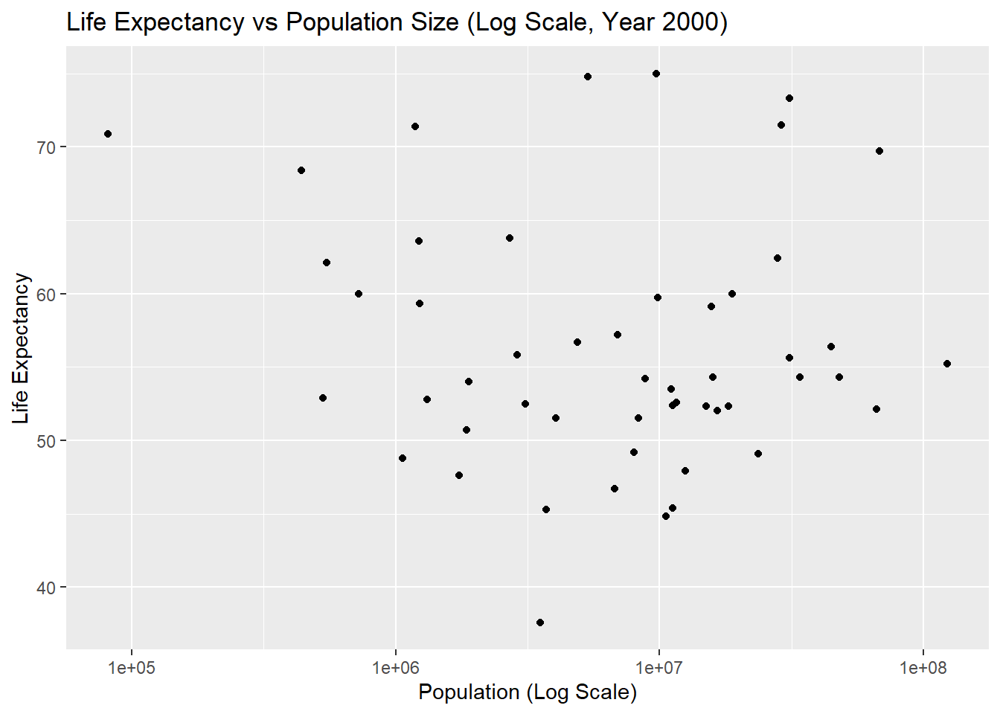
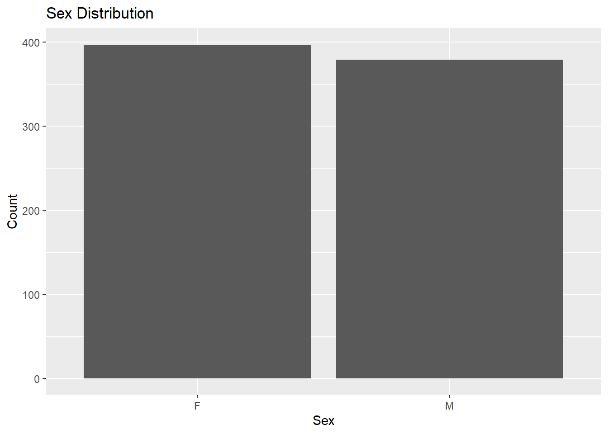
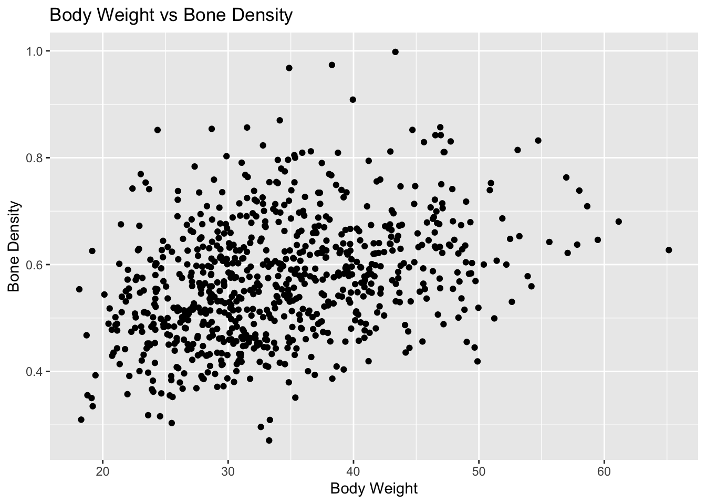
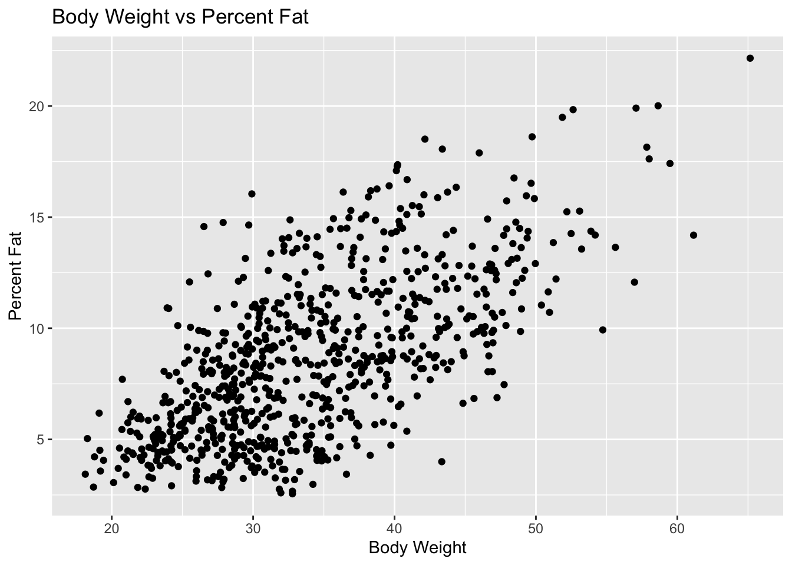

#load dslabs and tidyverse packagelibrary(dslabs)library(tidyverse)
── Attaching core tidyverse packages ──────────────────────── tidyverse 2.0.0 ──
✔ dplyr 1.1.2 ✔ readr 2.1.5
✔ forcats 1.0.0 ✔ stringr 1.5.1
✔ ggplot2 3.5.1 ✔ tibble 3.2.1
✔ lubridate 1.9.2 ✔ tidyr 1.3.1
✔ purrr 1.0.2
── Conflicts ────────────────────────────────────────── tidyverse_conflicts() ──
✖ dplyr::filter() masks stats::filter()
✖ dplyr::lag() masks stats::lag()
ℹ Use the conflicted package (<http://conflicted.r-lib.org/>) to force all conflicts to become errors
#get an overview of data structurestr(gapminder)
'data.frame': 10545 obs. of 9 variables:
$ country : Factor w/ 185 levels "Albania","Algeria",..: 1 2 3 4 5 6 7 8 9 10 ...
$ year : int 1960 1960 1960 1960 1960 1960 1960 1960 1960 1960 ...
$ infant_mortality: num 115.4 148.2 208 NA 59.9 ...
$ life_expectancy : num 62.9 47.5 36 63 65.4 ...
$ fertility : num 6.19 7.65 7.32 4.43 3.11 4.55 4.82 3.45 2.7 5.57 ...
$ population : num 1636054 11124892 5270844 54681 20619075 ...
$ gdp : num NA 1.38e+10 NA NA 1.08e+11 ...
$ continent : Factor w/ 5 levels "Africa","Americas",..: 4 1 1 2 2 3 2 5 4 3 ...
$ region : Factor w/ 22 levels "Australia and New Zealand",..: 19 11 10 2 15 21 2 1 22 21 ...
#get a summary of datasummary(gapminder)
country year infant_mortality life_expectancy
Albania : 57 Min. :1960 Min. : 1.50 Min. :13.20
Algeria : 57 1st Qu.:1974 1st Qu.: 16.00 1st Qu.:57.50
Angola : 57 Median :1988 Median : 41.50 Median :67.54
Antigua and Barbuda: 57 Mean :1988 Mean : 55.31 Mean :64.81
Argentina : 57 3rd Qu.:2002 3rd Qu.: 85.10 3rd Qu.:73.00
Armenia : 57 Max. :2016 Max. :276.90 Max. :83.90
(Other) :10203 NA's :1453
fertility population gdp continent
Min. :0.840 Min. :3.124e+04 Min. :4.040e+07 Africa :2907
1st Qu.:2.200 1st Qu.:1.333e+06 1st Qu.:1.846e+09 Americas:2052
Median :3.750 Median :5.009e+06 Median :7.794e+09 Asia :2679
Mean :4.084 Mean :2.701e+07 Mean :1.480e+11 Europe :2223
3rd Qu.:6.000 3rd Qu.:1.523e+07 3rd Qu.:5.540e+10 Oceania : 684
Max. :9.220 Max. :1.376e+09 Max. :1.174e+13
NA's :187 NA's :185 NA's :2972
region
Western Asia :1026
Eastern Africa : 912
Western Africa : 912
Caribbean : 741
South America : 684
Southern Europe: 684
(Other) :5586
#determine the type of object gapminder isclass(gapminder)
[1] "data.frame"
Processing Data
Write code that assigns only the African countries to a new object/variable called africadata. Run str and summary on the new object you created. You should now have 2907 observations, down from 10545. Depending on how you do this, you might also notice that all the different categories are still kept in the continent (and other) variables, but show 0. R does not automatically remove categories of what in R is called a factor variable (a categorical variable) even if they are empty. We don’t have to worry about that just now, but something to keep in mind, it can sometimes lead to strange behavior.
Take the africadata object and create two new objects (name them whatever you want), one that contains only infant_mortality and life_expectancy and one that contains only population and life_expectancy. You should have two new objects/variables with 2907 rows and two columns. Use the str, and summary commands to take a look at both. Make sure you add comments into your code to explain what each line of code is doing, and as needed, also add additional explanatory Markdown text to your Quarto file.
#filter only African countriesafricadata <- gapminder %>%filter(continent =="Africa")
#check the data structure of the object `africadata`str(africadata)
'data.frame': 2907 obs. of 9 variables:
$ country : Factor w/ 185 levels "Albania","Algeria",..: 2 3 18 22 26 27 29 31 32 33 ...
$ year : int 1960 1960 1960 1960 1960 1960 1960 1960 1960 1960 ...
$ infant_mortality: num 148 208 187 116 161 ...
$ life_expectancy : num 47.5 36 38.3 50.3 35.2 ...
$ fertility : num 7.65 7.32 6.28 6.62 6.29 6.95 5.65 6.89 5.84 6.25 ...
$ population : num 11124892 5270844 2431620 524029 4829291 ...
$ gdp : num 1.38e+10 NA 6.22e+08 1.24e+08 5.97e+08 ...
$ continent : Factor w/ 5 levels "Africa","Americas",..: 1 1 1 1 1 1 1 1 1 1 ...
$ region : Factor w/ 22 levels "Australia and New Zealand",..: 11 10 20 17 20 5 10 20 10 10 ...
#get a summary of the new datasummary(africadata)
country year infant_mortality life_expectancy
Algeria : 57 Min. :1960 Min. : 11.40 Min. :13.20
Angola : 57 1st Qu.:1974 1st Qu.: 62.20 1st Qu.:48.23
Benin : 57 Median :1988 Median : 93.40 Median :53.98
Botswana : 57 Mean :1988 Mean : 95.12 Mean :54.38
Burkina Faso: 57 3rd Qu.:2002 3rd Qu.:124.70 3rd Qu.:60.10
Burundi : 57 Max. :2016 Max. :237.40 Max. :77.60
(Other) :2565 NA's :226
fertility population gdp continent
Min. :1.500 Min. : 41538 Min. :4.659e+07 Africa :2907
1st Qu.:5.160 1st Qu.: 1605232 1st Qu.:8.373e+08 Americas: 0
Median :6.160 Median : 5570982 Median :2.448e+09 Asia : 0
Mean :5.851 Mean : 12235961 Mean :9.346e+09 Europe : 0
3rd Qu.:6.860 3rd Qu.: 13888152 3rd Qu.:6.552e+09 Oceania : 0
Max. :8.450 Max. :182201962 Max. :1.935e+11
NA's :51 NA's :51 NA's :637
region
Eastern Africa :912
Western Africa :912
Middle Africa :456
Northern Africa :342
Southern Africa :285
Australia and New Zealand: 0
(Other) : 0
#Create the first object containing only infant_mortality and life_expectancyinfant_mortality_life_expectancy <- africadata %>%select(infant_mortality, life_expectancy)
#check the data structure of the new object infant_mortality_life_expectancystr(infant_mortality_life_expectancy)
'data.frame': 2907 obs. of 2 variables:
$ infant_mortality: num 148 208 187 116 161 ...
$ life_expectancy : num 47.5 36 38.3 50.3 35.2 ...
#check the summary of the new object infant_mortality_life_expectancysummary(infant_mortality_life_expectancy)
infant_mortality life_expectancy
Min. : 11.40 Min. :13.20
1st Qu.: 62.20 1st Qu.:48.23
Median : 93.40 Median :53.98
Mean : 95.12 Mean :54.38
3rd Qu.:124.70 3rd Qu.:60.10
Max. :237.40 Max. :77.60
NA's :226
#Create the second object containing only population and life_expectancypopulation_life_expectancy <- africadata %>%select(population, life_expectancy)
#check the data structure of the new object population_life_expectancystr(population_life_expectancy)
'data.frame': 2907 obs. of 2 variables:
$ population : num 11124892 5270844 2431620 524029 4829291 ...
$ life_expectancy: num 47.5 36 38.3 50.3 35.2 ...
#check the summary of the new object population_life_expectancysummary(population_life_expectancy)
population life_expectancy
Min. : 41538 Min. :13.20
1st Qu.: 1605232 1st Qu.:48.23
Median : 5570982 Median :53.98
Mean : 12235961 Mean :54.38
3rd Qu.: 13888152 3rd Qu.:60.10
Max. :182201962 Max. :77.60
NA's :51
Plotting
Using the new variables you created, plot life expectancy as a function of infant mortality and as a function of population size. Make two separate plots. Plot the data as points. For the plot with population size on the x-axis, set the x-axis to a log scale.
plot1 <-ggplot(infant_mortality_life_expectancy, aes(x = infant_mortality, y = life_expectancy)) +geom_point() +labs(title ="Life Expectancy vs Infant Mortality",x ="Infant Mortality",y ="Life Expectancy") +theme_get()print(plot1)
Warning: Removed 226 rows containing missing values or values outside the scale range
(`geom_point()`).

plot2 <-ggplot(population_life_expectancy, aes(x = population, y = life_expectancy)) +geom_point() +scale_x_log10() +labs(title ="Life Expectancy vs Population Size (Log Scale)",x ="Population Size (Log Scale)",y ="Life Expectancy") +theme_get()print(plot2)
Warning: Removed 51 rows containing missing values or values outside the scale range
(`geom_point()`).

Plotting cont’d
You should see a negative correlation between infant mortality and life expectancy, which makes sense. You should also see a positive correlation between population size and life expectancy. In both plots, especially the second one, you will see ‘streaks’ of data that seem to go together. Can you figure out what is going on here? Take another look at the africadata data we generated, which should give you a hint of what’s happening. Add descriptive text into your Quarto file to explain what you see and why.
head(africadata)
country year infant_mortality life_expectancy fertility population
1 Algeria 1960 148.2 47.50 7.65 11124892
2 Angola 1960 208.0 35.98 7.32 5270844
3 Benin 1960 186.9 38.29 6.28 2431620
4 Botswana 1960 115.5 50.34 6.62 524029
5 Burkina Faso 1960 161.3 35.21 6.29 4829291
6 Burundi 1960 145.1 40.58 6.95 2786740
gdp continent region
1 13828152297 Africa Northern Africa
2 NA Africa Middle Africa
3 621797131 Africa Western Africa
4 124460933 Africa Southern Africa
5 596612183 Africa Western Africa
6 341126765 Africa Eastern Africa
str(africadata)
'data.frame': 2907 obs. of 9 variables:
$ country : Factor w/ 185 levels "Albania","Algeria",..: 2 3 18 22 26 27 29 31 32 33 ...
$ year : int 1960 1960 1960 1960 1960 1960 1960 1960 1960 1960 ...
$ infant_mortality: num 148 208 187 116 161 ...
$ life_expectancy : num 47.5 36 38.3 50.3 35.2 ...
$ fertility : num 7.65 7.32 6.28 6.62 6.29 6.95 5.65 6.89 5.84 6.25 ...
$ population : num 11124892 5270844 2431620 524029 4829291 ...
$ gdp : num 1.38e+10 NA 6.22e+08 1.24e+08 5.97e+08 ...
$ continent : Factor w/ 5 levels "Africa","Americas",..: 1 1 1 1 1 1 1 1 1 1 ...
$ region : Factor w/ 22 levels "Australia and New Zealand",..: 11 10 20 17 20 5 10 20 10 10 ...
Upon further research into the new objects, we can surmise the reason for the ‘streaks’ in our plots is due to the grouping of country and year.
More data processing
Let’s pick only one year and see what patterns we find. We want a year for which we have the most data. You might have noticed that in africadata, there are 226 NA (i.e., missing values) for infant mortality. Write code that figures out which years have missing data for infant mortality. You should find that there is missing up to 1981 and then again for 2016. So we’ll avoid those years and go with 2000 instead. Create a new object by extracting only the data for the year 2000 from the africadata object. You should end up with 51 observations and 9 variables. Check it with str() and summary().
#Create new object to determine which years have missing data for infant mortalitymissing_infant_mortality <- africadata %>%filter(is.na(infant_mortality)) %>%group_by(year) %>%summarize(missing_count =n())print(missing_infant_mortality)
#Create new object with data from the year 2000year_2000 <- africadata %>%filter(year=="2000")
#Verify data by using head() and str() fucntinonshead(year_2000)
country year infant_mortality life_expectancy fertility population
1 Algeria 2000 33.9 73.3 2.51 31183658
2 Angola 2000 128.3 52.3 6.84 15058638
3 Benin 2000 89.3 57.2 5.98 6949366
4 Botswana 2000 52.4 47.6 3.41 1736579
5 Burkina Faso 2000 96.2 52.6 6.59 11607944
6 Burundi 2000 93.4 46.7 7.06 6767073
gdp continent region
1 54790058957 Africa Northern Africa
2 9129180361 Africa Middle Africa
3 2254838685 Africa Western Africa
4 5632391130 Africa Southern Africa
5 2610945549 Africa Western Africa
6 835334807 Africa Eastern Africa
str(year_2000)
'data.frame': 51 obs. of 9 variables:
$ country : Factor w/ 185 levels "Albania","Algeria",..: 2 3 18 22 26 27 29 31 32 33 ...
$ year : int 2000 2000 2000 2000 2000 2000 2000 2000 2000 2000 ...
$ infant_mortality: num 33.9 128.3 89.3 52.4 96.2 ...
$ life_expectancy : num 73.3 52.3 57.2 47.6 52.6 46.7 54.3 68.4 45.3 51.5 ...
$ fertility : num 2.51 6.84 5.98 3.41 6.59 7.06 5.62 3.7 5.45 7.35 ...
$ population : num 31183658 15058638 6949366 1736579 11607944 ...
$ gdp : num 5.48e+10 9.13e+09 2.25e+09 5.63e+09 2.61e+09 ...
$ continent : Factor w/ 5 levels "Africa","Americas",..: 1 1 1 1 1 1 1 1 1 1 ...
$ region : Factor w/ 22 levels "Australia and New Zealand",..: 11 10 20 17 20 5 10 20 10 10 ...
More Plotting
Let’s make the same plots as above again, this time only for the year 2000. Based on those plots, there seems to still be a negative correlation between infant mortality and life expectancy, and no noticeable correlation between population size and life expectancy. Let’s apply some statistical model to this data.
#Create a plot showing life expectancy as a function of infant mortalityplot1_2000 <-ggplot(year_2000, aes(x = infant_mortality, y = life_expectancy)) +geom_point() +labs(title ="Life Expectancy vs Infant Mortality (Year 2000)",x ="Infant Mortality",y ="Life Expectancy") +theme_get()# Display Plot 1print(plot1_2000)

#Create a plot showing life expectancy as a function of populationplot2_2000 <-ggplot(year_2000, aes(x = population, y = life_expectancy)) +geom_point() +scale_x_log10() +labs(title ="Life Expectancy vs Population Size (Log Scale, Year 2000)",x ="Population (Log Scale)",y ="Life Expectancy") +theme_get()# Display Plot 1print(plot2_2000)

Simple model fits
Use the lm() function and fit life expectancy as the outcome, and infant mortality as the predictor. Then repeat, now with the population size as the predictor variable. (Use the data from 2000 only.) Save the result from the two fits into two objects (e.g. fit1 and fit2) and apply the summary command to both, which will print various fit results to the screen. Based on the p-values for each fit, what do you conclude? Add comments into your quarto file to explain what you did and found.
# Fit 1: Life Expectancy as the outcome and Infant Mortality as the predictorfit1 <-lm(life_expectancy ~ infant_mortality, year_2000)# Fit 2: Life Expectancy as the outcome and Population Size as the predictorfit2 <-lm(life_expectancy ~ population, year_2000)
summary(fit1)
Call:
lm(formula = life_expectancy ~ infant_mortality, data = year_2000)
Residuals:
Min 1Q Median 3Q Max
-22.6651 -3.7087 0.9914 4.0408 8.6817
Coefficients:
Estimate Std. Error t value Pr(>|t|)
(Intercept) 71.29331 2.42611 29.386 < 2e-16 ***
infant_mortality -0.18916 0.02869 -6.594 2.83e-08 ***
---
Signif. codes: 0 '***' 0.001 '**' 0.01 '*' 0.05 '.' 0.1 ' ' 1
Residual standard error: 6.221 on 49 degrees of freedom
Multiple R-squared: 0.4701, Adjusted R-squared: 0.4593
F-statistic: 43.48 on 1 and 49 DF, p-value: 2.826e-08
summary(fit2)
Call:
lm(formula = life_expectancy ~ population, data = year_2000)
Residuals:
Min 1Q Median 3Q Max
-18.429 -4.602 -2.568 3.800 18.802
Coefficients:
Estimate Std. Error t value Pr(>|t|)
(Intercept) 5.593e+01 1.468e+00 38.097 <2e-16 ***
population 2.756e-08 5.459e-08 0.505 0.616
---
Signif. codes: 0 '***' 0.001 '**' 0.01 '*' 0.05 '.' 0.1 ' ' 1
Residual standard error: 8.524 on 49 degrees of freedom
Multiple R-squared: 0.005176, Adjusted R-squared: -0.01513
F-statistic: 0.2549 on 1 and 49 DF, p-value: 0.6159
Results
Based on the p-values for each fit:
Model 1 (Life Expectancy vs. Infant Mortality): The p-value for the infant mortality coefficient is < 0.05, indicating a statistically significant negative relationship between infant mortality and life expectancy. This means that as infant mortality increases, life expectancy decreases, which is expected.
Model 2 (Life Expectancy vs. Population Size): The p-value for the population size coefficient is > 0.05, indicating a lack of statistical significance. This suggests that there is no strong evidence of a linear relationship between population size and life expectancy based on this dataset.
These results help us understand the factors affecting life expectancy in African countries in the year 2000. While infant mortality shows a clear and significant impact, population size does not appear to have a significant linear effect.
Assignment Part 2
This section contributed by Austin Thrash - FFK221
More data exploration
Pick another dataset from dslabs, whichever one you want. Unfortunately, the dslabs package doesn't have a nice website. But you can go to its offical CRAN entryLinks to an external site. and click on Reference Manual. The pdf lists the various other datasets and for each provides a brief explanation.
Once you chose one of the datasets, write R code to go through similar steps as above. Specifically, do the following:
Explore the dataset.
Do any processing/cleaning you want to do.
Make a few exploratory figures. Optionally, also some tables.
Run some simple statistical model(s). Your choice.
Report the results from the model(s).
For each step, add plenty comments to the code and explanatory Markdown text to the Quarto file.
Explore the dataset
# Printing structure and summary of 'mice_weights' datasetstr(mice_weights)
body_weight bone_density percent_fat sex diet gen
Min. :18.13 Min. :0.2708 Min. : 2.552 F:398 chow:394 4 : 97
1st Qu.:28.09 1st Qu.:0.4888 1st Qu.: 5.566 M:382 hf :386 7 :195
Median :32.98 Median :0.5643 Median : 8.276 8 :193
Mean :34.08 Mean :0.5697 Mean : 8.594 9 : 97
3rd Qu.:39.37 3rd Qu.:0.6373 3rd Qu.:10.926 11:198
Max. :65.15 Max. :0.9980 Max. :22.154
NA's :4 NA's :4
litter
1:442
2:338
Data Processing/Cleaning
# Removing NA's and checking to see if there are any missing values, there are 8. 4 in 'bone_density' and 4 in 'percent_fat' as seen abovemice <- mice_weights %>%drop_na()sum(is.na(mice))
[1] 0
Exploratory Figures
# Looking at distribution of sexplot_1 <-ggplot(mice, aes(x = sex)) +geom_histogram(stat ="count") +labs(title ="Sex Distribution",x ="Sex",y ="Count") +theme_get()
Warning in geom_histogram(stat = "count"): Ignoring unknown parameters:
`binwidth`, `bins`, and `pad`
print(plot_1)

# Plotting bone density as a function of body weight to identify if there is any relationship between the twoplot_2 <-ggplot(mice, aes(x = body_weight, y = bone_density)) +geom_point() +labs(title ="Body Weight vs Bone Density",x ="Body Weight",y ="Bone Density") +theme_get()print(plot_2)

# Plotting percent fat as a function of body weight to identify if there is any relationship between the twoplot_3 <-ggplot(mice, aes(x = body_weight, y = percent_fat)) +geom_point() +labs(title ="Body Weight vs Percent Fat",x ="Body Weight",y ="Percent Fat") +theme_get()print(plot_3)

As we can see from the models above, it looks as if there is a positive linear relationship between percent fat/bone density and body weight (which is to be expected). Therefore we will use these features during statistical modeling.
Statistical Models
# Fit 1: Body Weight as the outcome and Bone Density as the predictorfit_1 <-lm(body_weight ~ bone_density, mice)# Fit 2: Body Weight as the outcome and Percent Fat as the predictorfit_2 <-lm(body_weight ~ percent_fat, mice)
summary(fit_1)
Call:
lm(formula = body_weight ~ bone_density, data = mice)
Residuals:
Min 1Q Median 3Q Max
-17.0564 -5.5995 -0.8832 5.1219 29.5985
Coefficients:
Estimate Std. Error t value Pr(>|t|)
(Intercept) 19.159 1.401 13.67 <2e-16 ***
bone_density 26.139 2.414 10.83 <2e-16 ***
---
Signif. codes: 0 '***' 0.001 '**' 0.01 '*' 0.05 '.' 0.1 ' ' 1
Residual standard error: 7.538 on 774 degrees of freedom
Multiple R-squared: 0.1316, Adjusted R-squared: 0.1305
F-statistic: 117.3 on 1 and 774 DF, p-value: < 2.2e-16
summary(fit_2)
Call:
lm(formula = body_weight ~ percent_fat, data = mice)
Residuals:
Min 1Q Median 3Q Max
-16.2594 -4.7686 -0.7525 4.5298 18.9356
Coefficients:
Estimate Std. Error t value Pr(>|t|)
(Intercept) 21.51034 0.55808 38.54 <2e-16 ***
percent_fat 1.45918 0.05976 24.42 <2e-16 ***
---
Signif. codes: 0 '***' 0.001 '**' 0.01 '*' 0.05 '.' 0.1 ' ' 1
Residual standard error: 6.079 on 774 degrees of freedom
Multiple R-squared: 0.4351, Adjusted R-squared: 0.4344
F-statistic: 596.1 on 1 and 774 DF, p-value: < 2.2e-16
Results
We can see from the results above that both bone density and percent fat have a statistically significant relationship with body fat; both predictors have a p-value less than 0.05. The first results show that for every one unit increase in bone_density, we can expect to see a 26.139 increase in body_weight. The second results show that for every one unit increase in percent_fat, we expect to see a 1.45918 increase in weight.